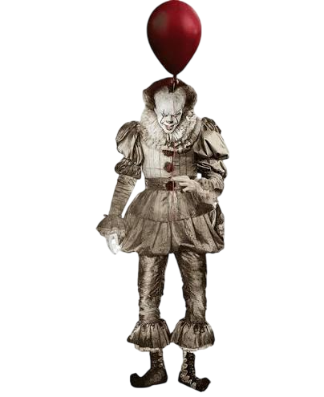

Крик (1996): Первыми убийцами были парень главной героини Сидни Прескотт — Билли Лумис — и его друг Стью Мэйхер.Другие части: В сиквелах и перезапусках под маской орудовали другие мстители и подражатели (например, родственники или одержимые фанаты). Особенность: Неизменным остается только голос маньяка по телефону, который во всех частях озвучивает один и тот же актер — Роджер Джексон.

Цикличность: Оно пробуждается каждые 27 лет в вымышленном городке Дерри (штат Мэн) , чтобы охотиться на детей и питаться их страхом. Любимый облик: Самый известный образ монстра — танцующий клоун Пеннивайз в серебряном костюме с оранжевыми помпонами. Способности: Это меняющий форму оборотень, который может читать мысли и принимать облик самых сокровенных кошмаров своих жертв. Истинная форма: Настоящий вид существа вне человеческого понимания — это энергетическая субстанция «Мертвые огни», а физически оно выглядит как гигантский паук. Цель: Монстр не просто убивает детей, а пугает их, так как страх, по его словам, делает их «вкуснее».